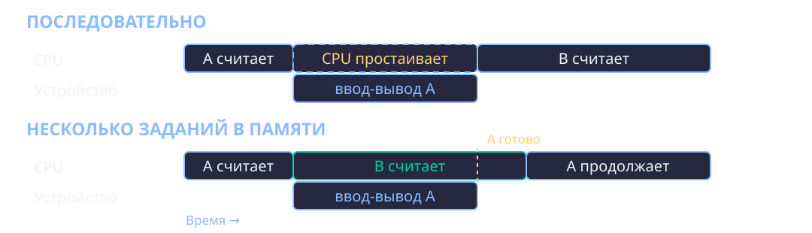
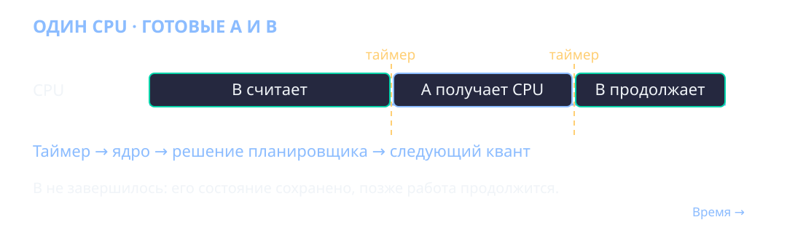
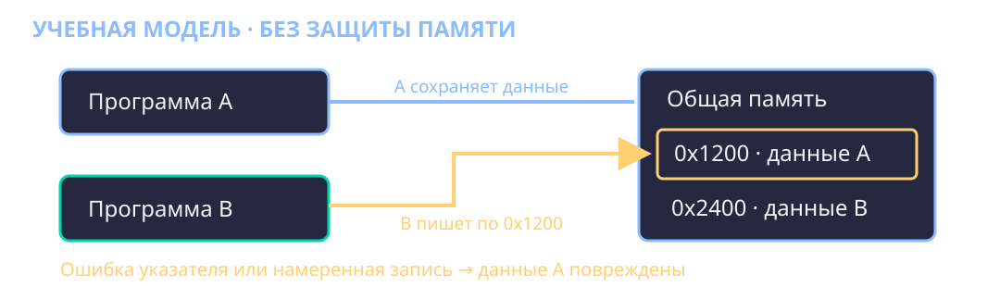
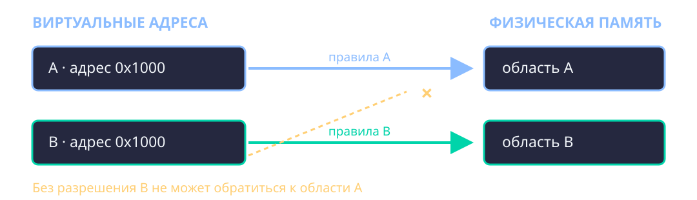
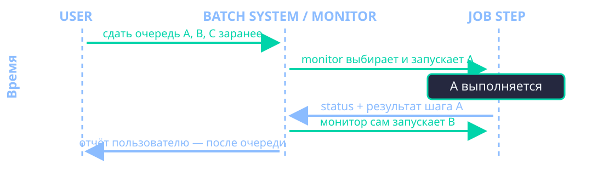
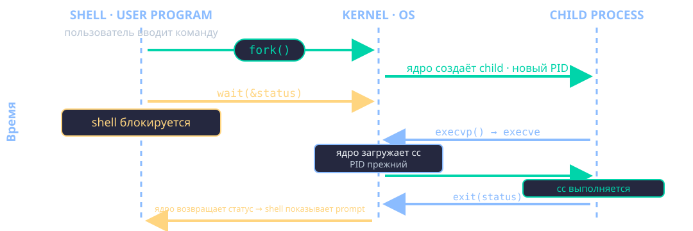

Адаптационный курс · Программная инженерия · 1 курс
Операционная система
От носителя до процесса
Лекция №5 · 90 минут
История систем · запуск программ · Linux, Windows, macOS · НИУ ВШЭ
Один компьютер — много задач
Ресурсы
CPU · память
файлы · устройства
Пользователи
Программы работают
по очереди и вместе.
Кто распределит ресурсы и защитит одну задачу от другой?
Программу нужно подать машине
Носителькоманды и данные
→Операторподготовить запуск
→Машинавыполнить задание
Перфокарты, перфолента, магнитная лента и другие носители.
Уточнение: носитель ≠ одна программа
На одном носителе
Может быть несколько заданий или файлов.
Неудобство в другом
Выбрать нужное задание, подать его и организовать переход к следующему.
Тратится время оператора и вычислительной машины.
Переключение вручную дорого
Задание A закончило
Нужно заметить окончание
и получить результат.
Задание B готово
Нужно подать носитель,
выбрать запуск, начать работу.
Машина может ждать, пока человек переключит работу.
Загрузчик — программа-посредник
Носителькод программы
→Загрузчикпрочитать и разместить
→CPUначать исполнение
Bootstrap-загрузка самой ОС — отдельная, более ранняя ступень.
Повторно использовать один загрузчик
Выбратьимя / задание
Прочитатькод с носителя
Передатьуправление программе
Оператор задаёт, что запускать; механизм загрузки общий.
Универсальный — в пределах формата
Уже не для одной программы
Один загрузчик может находить и запускать разные программы.
Но не для любой машины
Формат и архитектура должны быть совместимы.
Разделяем программу, носитель и механизм загрузки.
Следующий шаг: очередь заданий
задание A → задание B → задание C
Оператор заранее готовит несколько работ.
У каждой — входные данные, программа и требования к выводу.
Монитор передаёт машину дальше
Взять заданиеиз очереди
→Загрузитьи запустить
→Зафиксироватьитог и продолжить
Пакетная обработка автоматизирует последовательность; диалога с пользователем пока нет.
Очередь есть — почему CPU всё ещё ждёт?

Многопрограммность: пока A ждёт устройство, CPU выполняет B.
А если B не ждёт устройство?

Разделение времени: таймер возвращает управление ОС.
Вместе в памяти: кто защитит данные A?

Без защиты ошибка в B может испортить данные A.
Процесс — не файл и не просто участок памяти
Файл
Байты на накопителе.
Может не запускаться.
Процесс
Работающий экземпляр.
Состояние и ресурсы.
Один файл можно запустить дважды → два процесса.
Адреса виртуальны, доступ проверяется

Одинаковое число адреса ≠ доступ к чужим данным.
Что ещё ОС учитывает для процесса?
CPUрегистры и ход исполнения
Памятьадреса и права доступа
Ресурсыоткрытые файлы, устройства, полномочия
Изоляция памяти — часть управления ресурсами ОС.
Заданию нужен отчёт о результате
Исход
Завершилось нормально
или аварийно?
Управление
Продолжить очередь,
остановить или отметить ошибку?
Система сохраняет признак завершения шага/задания.
Пакетный статус ≠ shell-код
| Пакетное задание | Unix-команда |
|---|
| Итог шага для monitor / JCL | Статус процесса для родителя / shell |
| Правила зависят от ОС и JCL | Shell показывает статус последней команды |
Родственная идея «сообщить результат», но разные интерфейсы и соглашения.
Результат и диагностика тоже нужны
Входданные задания
Результатнабор данных / печать
Диагностикасообщения и журналы
Сохранённый результат можно проверить или использовать повторно.
Unix: интерактивная работа с файлами
Файлыодин интерфейс для данных и устройств
Процессысоздать, запустить, дождаться
Shellсвязать команды пользователя
Unix родился в конце 1960-х; его развитие шло параллельно с IBM mainframe.
Потоки — это подключаемые источники и приёмники
stdin · 0откуда читать
stdout · 1куда писать результат
stderr · 2куда писать диагностику
Shell может заменить подключение до запуска программы.
Файл-результат: передать данные следующей команде
./producer > result.txt
./consumer < result.txt
producer записывает результат.
consumer читает его как вход.
Pipe: связать процессы без промежуточного файла
./producer | sort
producerstdout
→pipeпоток байтов
→sortstdin
Маленькие программы можно композиционно соединять.
Две линии эволюции, общий вопрос
IBM mainframe
System/360 · OS/360
→ MVS → z/OS
Задания, JCL, datasets, spool.
Unix
Bell Labs, конец 1960-х
→ shell, процессы, pipes
Интерактивность и композиция.
Влияние: BSD, Linux, macOS.
ПК: DOS → Windows GUI → Windows NT — отдельная ветвь.
Как выполнить следующую работу и получить её результат?
Пакетная модель: системный монитор ведёт очередь

Monitor ведёт очередь от имени пакетной системы;
пользователь получает пакетный отчёт позже.
Интерактивно: shell просит ядро запустить команду

Shell — пользовательская программа, принимает команду.
Ядро создаёт child; shell получает его статус.
Рабочее определение ОС
ОС организует ресурсы
и предоставляет программам интерфейсы
- процессы и процессорное время;
- память и изоляция;
- файлы, устройства и права.
ОС — посредник и арбитр
Программа«прочитать файл»
→ОСпроверить доступ
→Устройствополучить данные
Драйвер связывает интерфейсы ОС с контроллером устройства.
Пользовательский режим и ядро
Приложение
Обычные вычисления.
Пользовательский режим.
Ядро ОС
Защищённые операции.
Режим ядра.
Системный вызов — контролируемый запрос к ОС.
Стартуем уже собранную программу
./process-demo первый второй
Исходник C компилируется заранее.
Сейчас изучаем: как запускается файл?
Кто прочитал команду?
Клавиатуратекст команды
→Терминалокно / устройство
→Shellразбор команды
Терминал показывает ввод и вывод; shell интерпретирует команду.
Схема запуска в Unix-like ОС
Shellразбирает строку
Ядропроверяет путь и доступ
Процессполучает новый образ
Упрощённая модель; системные детали отличаются.
Проверка до исполнения
- Файл существует и доступен?
- Разрешено ли исполнение?
- Понятен ли формат и архитектура?
- Доступны ли нужные загрузчик и библиотеки?
Найденный файл ещё не обязательно удастся запустить.
Почему ./program?
program # поиск в PATH
./program # файл в текущем каталоге
Текущий каталог обычно не добавляют в PATH по умолчанию.
Файл ELF — описание программы
Заголовкитип и архитектура
Сегментычто отобразить
Динамические зависимостичто подключить
ELF — распространённый формат исполняемых файлов Linux, не Windows/macOS.
Загрузчик готовит адресное пространство
Исполняемый файлна накопителе
→Отображённые областикод · данные
→Стартовый кодподготовка C
Путь до функции main
ELF → загрузчик → стартовый код C → main
В адресном пространстве также появятся стек,
аргументы, окружение и библиотеки.
Динамические библиотеки
Исполняемый файл
Ссылается на функции библиотек.
Динамический загрузчик
Находит и связывает зависимости при запуске.
Точный механизм зависит от платформы и сборки.
Изоляция защищает соседей
- Процесс не получает произвольный доступ ко всей RAM.
- Права областей памяти различаются: читать, менять, исполнять.
- Недопустимое обращение обрабатывает ОС.
Одно имя — несколько запусков
process-demo A
свой ввод
свои аргументы
process-demo B
своя память
свой код завершения
Исполняемый файл один; состояния процессов независимы.
Аргументы — это строки
./program --size 12 "two words"
argc — число аргументов.
argv — массив строк.
Программа должна сама проверить и преобразовать число.
Окружение наследуется
COURSE_MESSAGE='Привет' ./process-demo
Родительская среда может передать дочерней
набор пар «имя=значение».
Три потока в программе C
stdin · 0ввод
stdout · 1обычный вывод
stderr · 2диагностика
В process-demo ввод копируется в stdout;
сообщение о завершении идёт в stderr.
Соберём интерфейсы в один запуск
COURSE_MESSAGE='ok' ./process-demo first second \
< input.txt > result.txt 2> errors.txt
- аргументы:
first, second; - ввод:
input.txt; - результат и диагностика — в разных файлах.
Статус процесса — не текстовый вывод
./process-demo --status=7
echo $?
Ненулевой статус видит shell.
Сообщения программы остаются в потоках вывода.
Чтение файла проходит через ОС
Программаread / библиотека
→System callзапрос ядру
→ОС и драйверрезультат
Не каждый вызов функции C — отдельный системный вызов.
Код завершения — короткий статус
не 0
ошибка или иной исход
Конкретный смысл кода задаёт программа.
Одинаковые задачи, разные интерфейсы
| Система | Пример нативного формата | Запуск |
|---|
| Linux | ELF | shell / графическая среда |
| macOS | Mach-O | shell / графическая среда |
| Windows | PE | PowerShell / CMD / GUI |
Путь запуска в одной строке
shell → проверка → процесс → загрузчик → main
- Файл — не работающий процесс.
- Потоки можно перенаправлять.
- Статус сообщает результат запуска.
Вопросы на выход
- Что остаётся после завершения процесса?
- Как отправить обычный вывод в файл, а ошибки оставить на экране?
- Почему запуск из текущего каталога записан как
./program?
Какие права у файла?
file ./process-demo
ls -l ./process-demo
chmod +x ./process-demo
Добавление бита — необходимое условие, но не всегда достаточное.
Кто запущен сейчас?
ps
top
ps — снимок сведений о процессах.
top — обновляемое наблюдение.
Увидеть системные вызовы
strace ./process-demo < input.txt
Системные вызовы — наблюдаемая граница
между приложением и ядром Linux.